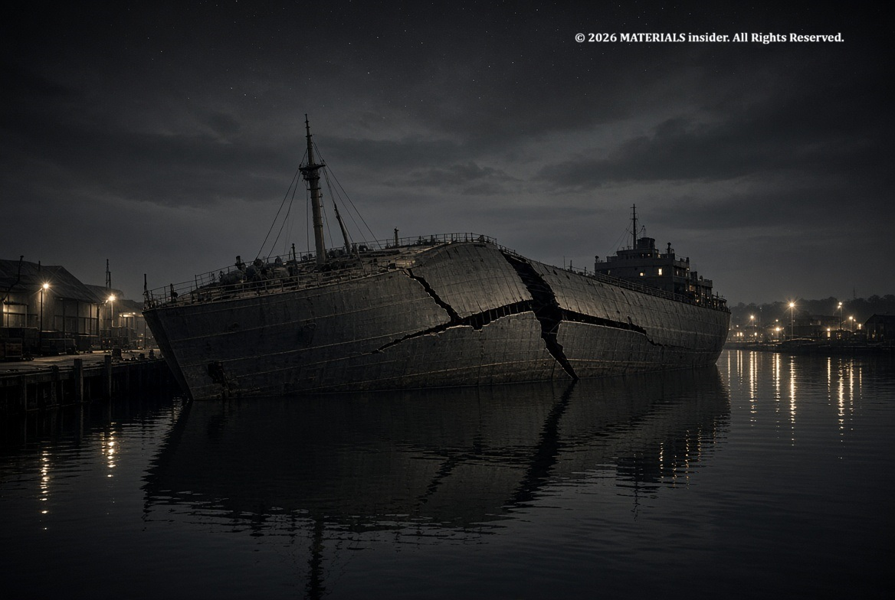
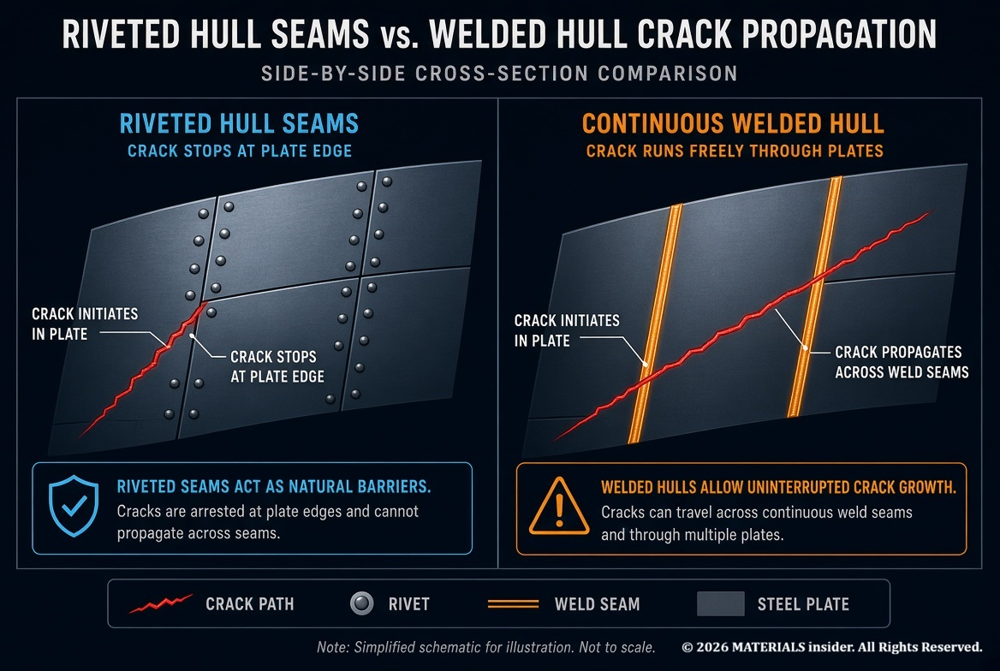
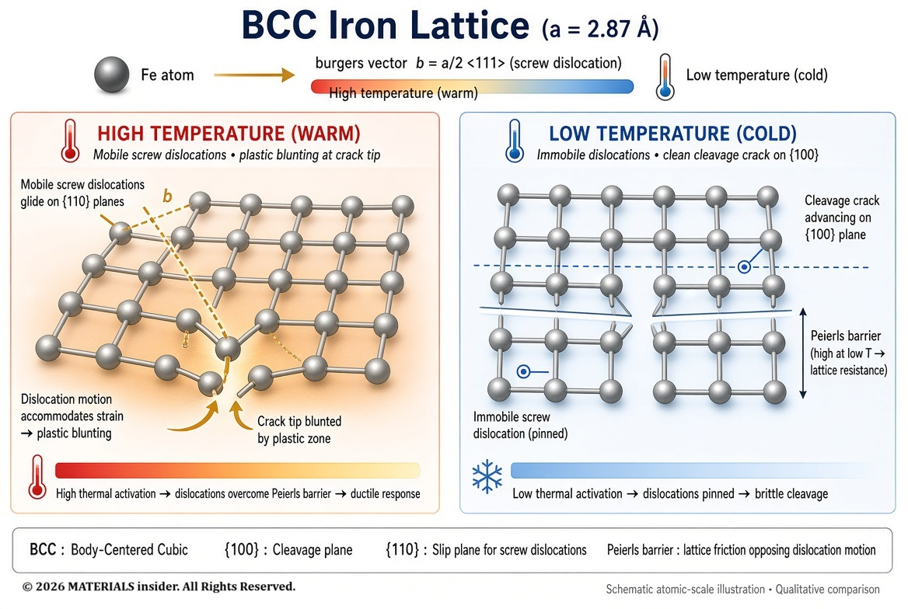
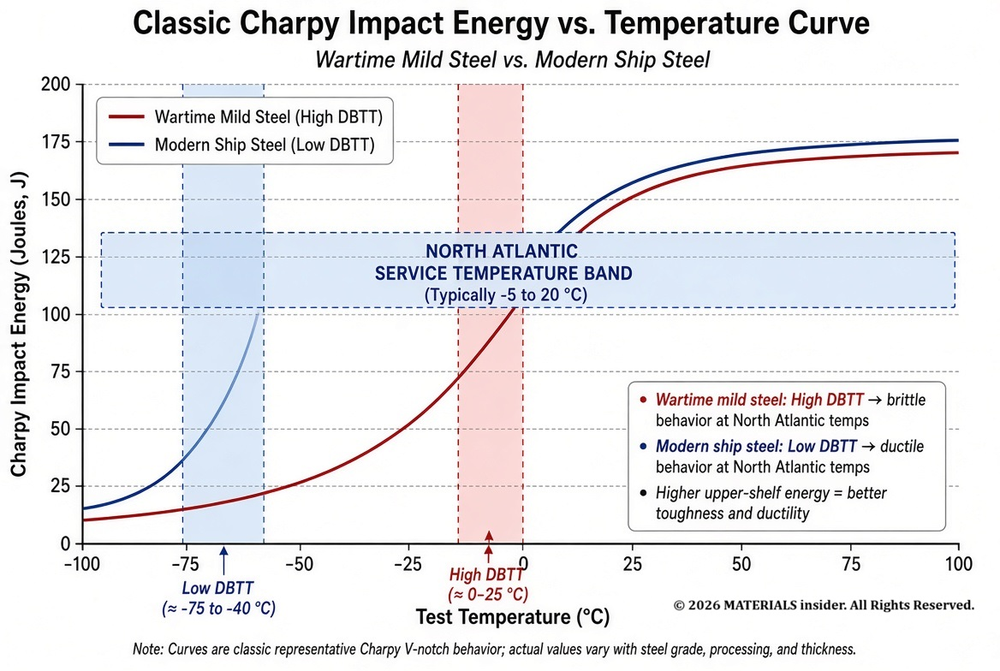
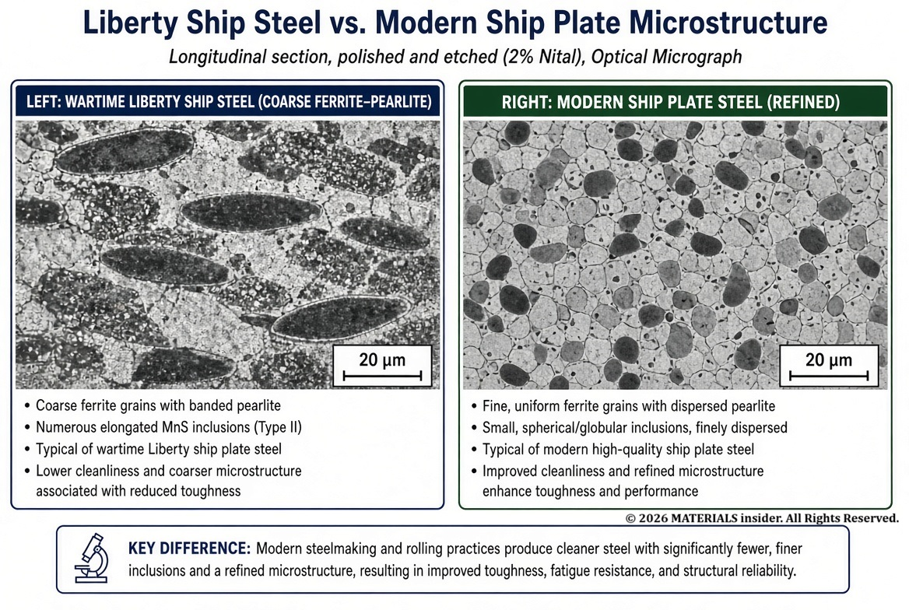
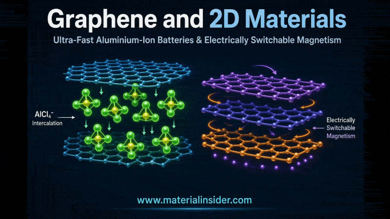

Liberty Ships: The Brittle Fracture Crisis That Changed Steel Forever
During World War II, hundreds of Liberty Ships cracked or broke completely in half — some while still in port. The cause was not enemy action, but brittle fracture of low-toughness steel combined with welding. This disaster taught the world critical lessons about toughness, temperature, and fracture mechanics.
On 16 January 1943 the newly completed T2 tanker SS Schenectady lay quietly at the outfitting dock in Portland, Oregon. Air temperature was about –3 °C and the harbor water roughly 4 °C. Conditions were still. Without warning, a report heard for at least a mile accompanied the near-instantaneous fracture of the deck, side shell, longitudinal bulkheads and bottom girders just aft of the bridge. Only the bottom plating held. The vessel jack-knifed; the mid-body rose clear of the water while the bow and stern settled into the river silt.
The ship was repaired and later served, but the event became the most dramatic public illustration of a problem already appearing across the emergency-built fleet.

What Were Liberty Ships?
Facing catastrophic merchant-tonnage losses to U-boats, the United States launched an emergency shipbuilding program that produced roughly 2,710 Liberty (EC2-S-C1) cargo ships, plus related T2 tankers, between 1941 and 1945. The design was deliberately simple and standardized so it could be mass-produced by relatively inexperienced yards using assembly-line methods. Average construction time fell to weeks.
A decisive process change was the extensive use of welding in place of riveting. Welding was faster and required less steel, but it produced a continuous, monolithic hull. Riveted seams had acted as natural crack-arrestors; a crack that reached a plate edge stopped. In a fully welded hull a crack, once started, could run uninterrupted for tens of meters.
The Materials Problem
The steels available under wartime constraints were ordinary low-carbon mild steels whose chemistry and processing left them with high ductile-to-brittle transition temperatures (DBTT). Typical features included relatively low manganese, elevated sulfur and phosphorus, and coarse ferrite–pearlite microstructures containing elongated MnS and oxide inclusions.
Charpy data later extracted from fractured ships showed 15 ft-lb (≈20 J) transition temperatures commonly in the range –4 °C to +66 °C, with averages near or above 0–25 °C — well within North Atlantic and winter harbor service temperatures. Manganese improves toughness by refining microstructure and scavenging sulfur; sulfur and phosphorus promote intergranular weakness and raise the transition temperature. The resulting plates were notch-sensitive: small geometric discontinuities or weld defects could initiate cleavage at stresses far below the macroscopic yield strength once the temperature dropped below the DBTT.

Why Welding Made It Worse
Welding introduced two additional aggravating factors. First, residual tensile stresses locked into the structure after cooling acted as a constant preload. Second, weld toes, incomplete fusion, and design details (especially the sharp square corners of hatch openings) provided ready-made crack starters of high local stress concentration. Once a cleavage crack formed, the continuous welded path allowed it to propagate at near-sonic speeds with little plastic work.
Contemporary investigations initially blamed “poor workmanship.” Later metallurgical work, including that of Constance Tipper at Cambridge, showed that the cracks frequently initiated in the base plate itself and that the fundamental limitation was the steel’s low toughness at service temperature rather than weld metal alone.
Atomic and Microstructural Explanation
Ferritic steels are body-centered cubic (BCC). Plasticity occurs by the motion of dislocations, predominantly screw dislocations whose cores are non-planar and must overcome a substantial Peierls barrier. At elevated temperature, thermal activation assists kink-pair nucleation and the dislocations move relatively freely; the material can blunt a crack tip by extensive plastic flow (ductile rupture).
As temperature falls, the thermal energy available for kink-pair formation decreases rapidly. The critical stress for dislocation glide rises sharply while the stress required for cleavage on {100} planes remains comparatively temperature-insensitive. When the local stress intensity ahead of a notch exceeds the cleavage stress before widespread plasticity can occur, the crack advances by successive bond rupture on cleavage planes, producing the classic shiny, crystalline fracture surface with little macroscopic ductility.
Inclusions and grain-boundary carbides act as preferred cleavage nucleation sites. Coarse ferrite grains increase the effective cleavage facet size and lower the toughness. The DBTT is therefore a kinetic competition between thermally activated dislocation motion and athermal cleavage; composition, grain size, and inclusion morphology shift the temperature at which the competition is lost.

The Scale of the Problem
Of the roughly 4,700 emergency-program merchant vessels examined after the war, nearly 1,000 sustained fractures of structural significance. Approximately 1,500 brittle cracks of various lengths were recorded; on the order of 20 vessels broke completely in two or were abandoned as constructive total losses. Most serious incidents occurred in cold weather. Later design modifications (crack-arrestor straps, rounded hatch corners, improved steel selection) reduced the rate dramatically.
Key Lessons Learned
The crisis catalyzed the modern understanding of fracture mechanics. Systematic Charpy V-notch testing became a standard acceptance criterion for structural steels. Steelmakers raised manganese, lowered sulfur and phosphorus, controlled grain size, and introduced normalized or controlled-rolled microstructures that depressed the DBTT well below service temperatures. Design codes began to require crack-arrest considerations and to limit geometric stress concentrators.
The work of Tipper, the U.S. investigation boards, and subsequent researchers established that toughness is a temperature- and rate-dependent material property that must be measured and specified for fracture-critical applications.

Key Takeaways
- BCC ferrite exhibits a sharp DBTT because dislocation mobility is thermally activated while cleavage is not.
- Low-Mn, high-S/P steels of the early 1940s had transition temperatures that overlapped ordinary winter service conditions.
- Continuous welding removed natural crack-arrest features and introduced residual stresses and notches, allowing brittle cracks to run to catastrophic length.
- The failures drove the adoption of Charpy testing, cleaner steel chemistry, and fracture-mechanics thinking that still underpins ship, pressure-vessel, and structural-steel specifications today.
Final Thoughts
The Liberty Ships did not fail because the steel was “weak” in the ordinary tensile sense. They failed because the combination of chemistry, microstructure, temperature, residual stress, and continuous geometry pushed the material across the ductile-to-brittle transition. Strength calculations alone were never enough. Toughness, temperature dependence, and the ability to stop a running crack decide whether a structure survives.
References
- 1. Harris, M.D., Grogg, W.J., Akoma, A., Hayes, B.J., Reidy, R.F., Imhoff, E.F. & Collins, P.C. (2015). Revisiting (Some of) the Lasting Impacts of the Liberty Ships via a Metallurgical Analysis of Rivets from the SS “John W. Brown”. JOM, 67, 2965–2975.
- 2. Sumpter, J.D.G. & Kent, J.S. (2004). Prediction of ship brittle fracture casualty rates by a probabilistic method. Marine Structures, 17(8), 575–589.
- 3. Sumpter, J.D.G. & Kent, J.S. (2006). Fracture toughness of grade D ship steel. Engineering Fracture Mechanics, 73(10), 1396–1413.
- 4. Knott, J. (2015). Brittle fracture in structural steels: perspectives at different size-scales. Philosophical Transactions of the Royal Society A, 373(2038), 20140126.


Graphene and 2D Materials: Ultra-Fast Aluminium-Ion Batteries and Electrically Switchable Magnetism
How graphene enables ultra-fast charging Al-ion cells and voltage-controlled magnetism in multilayer stacks. Atomic-level insights into intercalation, layer sliding, and practical advances for batteries and spintronics.
Read Full Article →Cold Gas Thrusters: How Tesla’s Roadster Uses Compressed Air Instead of Fire
Cold gas thrusters use compressed inert gas to create thrust without combustion. See how Tesla demonstrated this technology on the next-generation Roadster and what happens at the molecular level.
Read Full Article →Share this article: